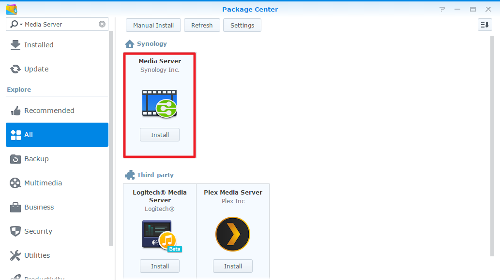
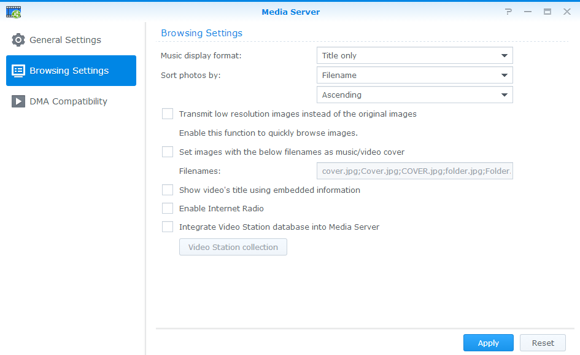
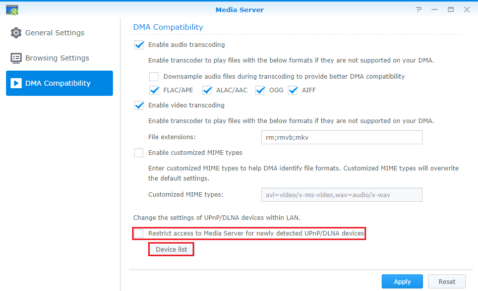

개요
Synology NAS는 로컬 영역 네트워크에서 멀티미디어 서버 역할을 할 수 있기 때문에 TV/스테레오 시스템과 Sony PlayStation3/Xbox 360 같은 가정용 장치로 멀티미디어 콘텐츠를 재생할 수 있습니다. 이러한 장치는 DLNA/UPnP 호환 디지털 미디어 어댑터(DMA)입니다. 재생을 위해 멀티미디어 콘텐츠를 Synology NAS에서 DMA 장치로 스트리밍하려면 미디어 재생 설정을 구성해야 합니다. 예를 들어, 미디어 파일의 검색 설정을 관리하고 파일의 호환성을 향상합니다. 이 기능은 미디어 서버 패키지에서 사용할 수 있습니다.
1. 미디어 서버 설치
미디어 서버를 설치하려면 패키지 센터로 이동하고 미디어 서버를 찾은 다음 설치를 클릭합니다.
2. Synology NAS에 멀티미디어 파일 업로드
NAS에 미디어 서버를 설치하면 photo, music 및 video와 같은 기본 공유 폴더가 자동으로 생성되고 색인이 지정됩니다. 사진, 음악 또는 비디오와 같은 미디어 파일을 업로드하기만 하면 되고, DMA 장치에서 이러한 파일에 액세스할 수 있습니다.
3. 미디어 플레이어의 검색 설정 구성
DMA 장치가 Synology NAS에서 미디어 파일을 검색하는 방법을 결정할 수 있습니다.
- 메인 메뉴 > 미디어 서버로 이동합니다.
- 왼쪽 패널에서 검색 설정을 클릭합니다. 
- 자세한 정보를 보려면 미디어 서버 창의 오른쪽 상단에 있는 도움말 단추를 클릭하십시오.
4. DMA 호환성 향상
DLNA/UPnP TV 또는 DMA 장치에서 NAS에 저장된 멀티미디어 콘텐츠가 원활하게 재생되지 않는 경우 미디어 서버의 DMA 호환성 설정을 구성할 수 있습니다.
- DMA 장치가 제대로 설치되어 있고 로컬 네트워크 내에서 NAS를 통해 검색되는지 확인하려면 장치 목록을 클릭합니다. DMA 장치 목록은 해당 장치 정보와 함께 표시됩니다.
- 새로 감지된 UPnP/DLNA 장치에 대해 미디어 서버에 대한 액세스 제한을 선택하지 않도록 하십시오. 이 옵션을 선택하면 미디어 서버에서 DMA 장치에 액세스할 수 없게 됩니다.
다른 형식의 멀티미디어 파일에 대한 기술 지원과 관련된 자세한 내용을 보려면 미디어 서버 창의 오른쪽 상단에 있는 도움말 단추를 클릭하십시오.
5. DLNA TV를 사용하여 NAS에 저장된 미디어 파일에 액세스
DLNA/UPnP 및 DMA 장치를 홈 네트워크에 쉽게 연결할 수 있습니다. Synology NAS와 DLNA 장치가 모두 홈 네트워크에 연결되면 선택한 폴더를 검색하고 대형 화면에서 NAS의 음악을 감상하거나 비디오를 시청할 수 있습니다.
설정 과정은 DLNA 호환 DMA 장치에 따라 다릅니다. DLNA를 통해 NAS에 저장된 미디어 파일에 액세스하는 방법에 대한 자세한 내용을 보려면 사용하는 클라이언트 장치의 지침을 따르십시오.